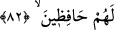

akşam Tedmur’a geri dönerdi.”
Rüzgar, Hz. Süleyman’ı istediği her yere götürür, sonra Şam’daki evine geri getirirdi.
Rivâyet olunur ki Süleyman (a.s.) bir sabah Irak’tan yola çıktı. Merv’de öğle uykusunu
uyudu. İkindi namazını Belh’te kıldı. Sonra Belh’ten Türk diyarına ve Çin’e geçti.
Oradan da deniz sahilini takip ederek doğuya yöneldi ve böylece Kandehar’a geldi.
Sonra oradan çıkıp Mekran ve Kirman’a geldi. Nihâyet Fars diyarına (İran’a) vardı.
Orada bir kaç gün konakladı. İran’dan da bir sabah Kesker’e gitti, oradan Şam’a geldi.
Hz. Süleyman’ın karargâhı (başkenti) Şam yakınında bulunan Tedmur’da idi.” Nitekim
Bahru’l-ulûm’da böyle denilmiştir.
Şeyh Sa‘dî (k.s.) der ki:
Sabah akşam yeller üzerinde yürümez miydi
Hz. Süleyman’ın o meşhur tahtı?
Nihâyet yerinde yeller esmedi mi?
Ne mutlu o kimse ki dünyadan ilimle adaletle göçüp gitti
“Biz herşeyi biliriz.” Ona göre de her şeyi ilmimiz ve hikmetimiz gereğince icrâ
ederiz.
82. Şeytanlar arasından da, onun için dalgıçlık eden (ve inciler çıkaran) ve bundan
başka işler görenler vardı. Biz onları gözetim altında tutuyorduk.
“Şeytanlar arasından da, onun için dalgıçlık eden (ve inciler çıkaran)” denize
dalan bazı şeytanları da ona boyun eğdirmiş, emrine musahhar kılmıştık. O şeytanlar
onun için denize dalar ve oradan ona kıymetli şeyler çıkarırlardı.
Râgıb şöyle demiştir: “
”; suyun dibine dalıp oradan bir şey çıkarmaktır. İlim
olsun mal olsun gizli bir şeye yönelip onu ortaya çıkaran kimseye “
”, bunu çok
yapana da “
” denir.
“Ve bundan başka işler görenler vardı.” Yâni, burada anılan denize dalmanın
dışında başka işler yapan; şehirlerde binâlar inşâ eden, saraylar yapan ve hayret verici
sanatlar ortaya koyanlar vardı. Genel olarak ifâde edildiği için bunlar ya birinci
gruptaki cinler veya başkalarıydı.
Süleyman (a.s.)’a boyun eğdirilen cinlerin, cinlerin mü’minleri değil kâfirleri olduğu
rivâyet edilmiştir. Çünkü âyette “Şeytanlar arasından…” buyrulmuştur.
“Biz onları” cinleri yaratılışları gereği ona isyan edip direnme veya herhangi bir işi
ifsad etmeleri ihtimâline binâen onun emrinden çıkmamaları için “gözetim altında